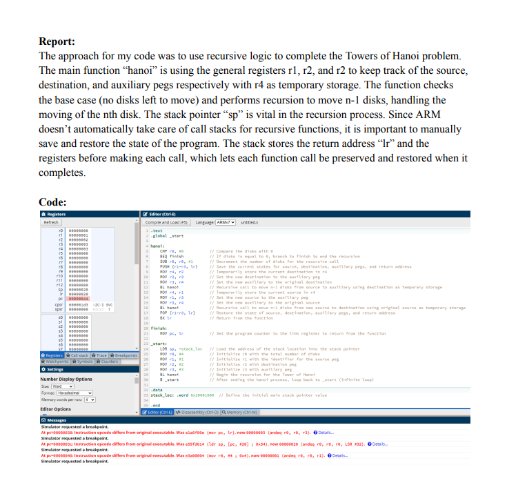

Towers of Hanoi (ARM Assembly)

Technologies: ARM Assembly, Stack Memory
Description: Recursive implementation of Towers of Hanoi using assembly. This project demonstrates low-level stack frame management to preserve function state and apply recursive logic within ARM constraints.
Challenges: Writing recursion in assembly requires careful stack manipulation and register usage. Managing state without high-level constructs was the core difficulty.
View on GitHub